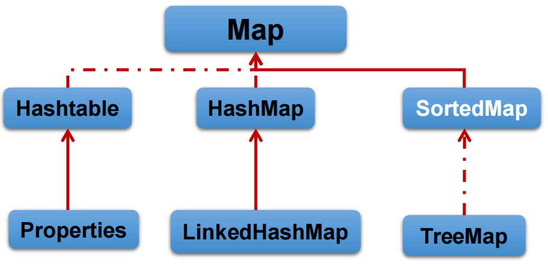

集合¶
Collection接口¶
Collection 接口是 List、Set 和 Queue 接口的父接口，该接口里定义的方法既可用于操作 Set 集合，也可用于操作 List 和 Queue 集合
JDK不提供此接口的任何直接实现，而是提供更具体的子接口(如：Set和List)实现
在 Java5 之前，Java 集合会丢失容器中所有对象的数据类型，把所有对象都当成 Object 类型处理；从 JDK 5.0 增加了泛型以后，Java 集合可以记住容器中对象的数据类型。
常用方法¶
| Modifier and Type | Method and Description |
|---|---|
boolean |
add(E e) |
boolean |
addAll(Collection<? extends E> c) |
void |
clear() |
boolean |
contains(Object o) |
boolean |
containsAll(Collection<?> c) 比较两个集合的各个元素是否相同 |
boolean |
equals(Object o) |
int |
hashCode() |
boolean |
isEmpty() |
Iterator<E> |
iterator() 返回迭代器对象，用于集合遍历 |
boolean |
remove(Object o) |
boolean |
removeAll(Collection<?> c) 差集 |
boolean |
retainAll(Collection<?> c) 交集 |
int |
size() |
Object[] |
toArray() 转成对象数组 |
<T> T[] |
toArray(T[] a) |
向 Collection 接口的实现类的对象中添加数据 obj 时，要求 obj 所在类重写 equals 方法
数组 → 集合：调用 Arrays 类的 asList 静态方法
迭代器¶
-
提供一种方法访问一个容器(container)对象中各个元素，而又不需暴露该对象的内部细节。迭代器模式，就是为容器而生
-
Iterator 仅用于遍历集合，Iterator 本身并不提供承装对象的能力。如果需要创建 Iterator 对象，则必须有一个被迭代的集合
-
集合对象每次调用iterator()方法都得到一个全新的迭代器对象，默认游标都在集合的第一个元素之前
| Modifier and Type | Method and Description |
|---|---|
boolean |
hasNext() |
E |
next() |
default void |
remove() 删除迭代器的最后一个元素 |
标准遍历写法：
while(iterator.hasNext()){
System.out.println(iterator.next());
}
移除元素：
Iterator iter = coll.iterator();//回到起点
while(iter.hasNext()){
Object obj = iter.next();
if(obj.equals("Tom")){
iter.remove();
}
}
Iterator 删除集合的元素，是遍历过程中通过迭代器对象的 remove 方法，不是集合对象的remove方法。
如果还未调用 next() 或在上一次调用 next 方法之后已经调用了 remove 方法，再调用 remove 都会报IllegalStateException，即调用 remove 之前必须先调 next，而且必须成对使用
移除元素的操作不常使用
增强for循环¶
Java 5.0 提供了 foreach 循环迭代访问 Collection 和数组。
遍历操作不需获取Collection或数组的长度，无需使用索引访问元素；底层调用迭代器
练习题
String[] str = new String[5];
for (String myStr : str) {
myStr = "atguigu";
System.out.println(myStr);
}
for (int i = 0; i < str.length; i++) {
System.out.println(str[i]);// 输出的全部
}
数组元素不会被修改，因为增强for循环那里是定义了一个临时变量，对临时变量修改值，不会影响原始的数组的值
List接口¶
List集合类中元素有序、且可重复，集合中的每个元素都有其对应的顺序索引
List容器中的元素都对应一个整数型的序号记载其在容器中的位置，可以根据序号存取容器中的元素
实现类常用的有：ArrayList、LinkedList 和 Vector
三个实现类的异同¶
同：都实现类 List 接口；存储数据的特点相同
不同：
1、ArrayList 是 List 接口的主要实现类；Object 数组实现，默认容量10；线程不安全，效率高；1.5倍扩容
2、LinkedList 底层使用双向链表实现；适合插入、删除操作多的；线程不安全
3、Vector 是最古老的实现类；Object 数组实现，默认容量10；线程安全，效率低；2倍扩容
源码和扩容机制¶
ArrayList扩容¶
默认1.5倍扩容（int newCapacity = oldCapacity + (oldCapacity >> 1)），然后复制元素到新数组（Arrays.copyOf(elementData, newCapacity)）
建议使用带参数的构造器，避免频繁扩容
调用无参构造器：
- JDK7直接创建了一个容量为10的数组；
- JDK8最开始是一个容量是0的空数组，只有第一次调用
add方法加入新元素的时候才会创建容量为10的空数组，然后把数据放到数组里面。后续添加和扩容和JDK7相同
总结：JDK7类似单例的饿汉模式，JDK8类似懒汉，延迟了数组的创建
Arrays.asList(…) 方法返回的 List 集合，既不是 ArrayList 实例，也不是 Vector 实例。 Arrays.asList(…) 返回值是一个固定长度的 List 集合
Vector源码分析¶
调用无参构造直接创建了一个容量为10的空数组；扩容的时候，默认扩容为原来的2倍
int newCapacity = oldCapacity +
((capacityIncrement > 0) ? capacityIncrement : oldCapacity);// capacityIncrement默认为0
// 等价于
int newCapacity = oldCapacity * 2;
基本不用，就算考虑线程安全也不用这个
常用方法¶
List除了从Collection集合继承的方法外，List 集合里添加了一些根据索引来操作集合元素的方法
| Modifier and Type | Method and Description |
|---|---|
boolean |
add(E e) 增 |
E |
remove(int index) 删 |
E |
set(int index, E element) 改 |
E |
get(int index) 查 |
void |
add(int index, E element) 插入 |
List<E> |
subList(int fromIndex, int toIndex) 子列表 |
变量方法：迭代器遍历、增强for循环、普通for循环
public static void main(String[] args) {
List list = new ArrayList();
list.add(1);
list.add(2);
list.add(3);
updateList(list);
System.out.println(list);
}
private static void updateList(List list) {
// list.remove(2);// 按照索引删的
list.remove(new Integer(2));// 按照对象删的
}
Set接口¶
无序的，不可重复的
Collection的子接口，set接口没有提供额外的方法
判断两个对象是否相同不是使用 == 运算符，而是根据 equals() 方法
存放在Set容器中的对象，对应的类一定要重写equals()和hashCode(Object obj)方法，以实现对象相等规则。即：“相等的对象必须具有相等的散列码”
无序性：不等于随机性。
不可重复性：保证添加的元素按照
equals()方法判断时，不能返回true
HashSet¶
特点：无序；线程不安全；集合元素可以是 null；底层是数组加链表（哈希表）；大多数时候使用 Set 集合时都使用这个实现类
判断两个元素相等：两个对象通过 hashCode() 方法比较相等，并且两个对象的 equals() 方法返回值也相等
扩容机制¶
初始容量为 16，当如果使用率超过 0.75，就会扩大容量为原来的 2 倍
添加元素的过程（底层使用HashMap）¶
- 先调用该对象的 hashCode() 方法来得到该对象的哈希值，然后根据哈希值，通过散列函数计算该对象在底层数组中的存储位置。
- 如果该位置没有元素，则添加成功；
- 如果有元素，则和现有元素比较哈希值
- 如果和现有元素哈希值不同，则添加元素；
- 如果哈希值相等，会再继续调用 equals 方法。（调用自己的 equals 方法和别人比）
- 如果 equals 方法结果为 true，说明元素重复了，添加失败；
- 如果为 false，则添加元素。
添加元素时如果有冲突，使用拉链法处理冲突（JDK7 头插法，8 是尾插法，即七上八下）
如果两个元素的 equals() 方法返回 true，但它们的 hashCode() 返回值不相等，hashSet 将会把它们存储在不同的位置，但依然可以添加成功
LinkedHashSet¶
特点：HashSet 的子类；底层是数组+链表+双向链表，使得元素看起来是以插入顺序保存的；插入性能略低于 HashSet，但在遍历全部元素性能高于HashSet；线程不安全
遍历的时候的顺序就是添加的顺序
与HashSet的不同之处在于，它维护一个遍历其所有条目的双向链表。这个链表定义了迭代顺序，即元素插入到集合中的顺序(插入顺序)。原来只是一个单向链表（只有一个
next指针），现在又在每个节点上加了2个指针before，after，用来记录节点的插入顺序（每次新建一个节点的时候都会维护这个双端链表）底层使用了LinkedHashMap
TreeSet（了解即可）¶
特点：底层是红黑树；可以按照添加对象的指定属性进行排序；默认遍历输出的顺序是自然排序（从小到大）
TreeSet中的数据要求是相同类的对象；
调用构造器的时候可以指定排序规则
public TreeSet(Comparator<? super E> comparator)
自然排序：需要实现 Comparable 接口。比较的时候看 compareTo 的返回值，不是调用 equals 方法
定制排序：结合 Comparator 使用。比较的标准是 compare 方法的返回值
Map接口¶
Map 接口和 Collection 接口同级，没有父子关系
特点¶
- 双列数据，存储 key-value 对的数据；
- key 无序的，不可重复的，使用 Set 存储所有的 key （
Set<K> keySet()）；key 所在的类需要重写equals和hashCode方法（以 HashMap 为例） - value 无序的，可重复的；使用 Collecction 存储所有的 value（
Collection<V> values()）；values 所在的类需要重写equals方法 key-value构成了一个Entry对象，因为 key 的特性，所以也是无序的、不可重复的，也是用 Set 存储（Set<Map.Entry<K, V>> entrySet()）
实现类¶

- HashMap：Map的主要实现类；线程不安全；可以存储null的key和value
- LinkedHashMap：保证遍历的时候可以按照添加的顺序实现遍历（在哈希表的基础上添加了一对指针
before, after）
- LinkedHashMap：保证遍历的时候可以按照添加的顺序实现遍历（在哈希表的基础上添加了一对指针
- TreeMap：保证按照添加的键值对进行排序，使用key的自然排序或者定制排序；底层是红黑树
- Hashtable：古老的实现类；线程安全；不可以存储null的key和value
- Properties：常用来处理配置文件。key 和 value 都是
String类型
- Properties：常用来处理配置文件。key 和 value 都是
Properties properties = new Properties();
try(InputStream file =new FileInputStream("jdbc.properties")) {
properties.load(file);// 加载文件
String name = properties.getProperty("name");
String password = properties.getProperty("password");
System.out.println(name + ", " + password);
}
catch (Exception e){
e.printStackTrace();
}
/*
* 文件内容如下：
* name=Tom
* password=123456
*/
常用方法¶
以 HashMap 为例：
| Modifier and Type | Method and Description |
|---|---|
boolean |
containsKey(Object key)Returns true if this map contains a mapping for the specified key. 查 |
boolean |
containsValue(Object value)Returns true if this map maps one or more keys to the specified value. 查 |
V |
get(Object key)Returns the value to which the specified key is mapped, or null if this map contains no mapping for the key. 查 |
V |
getOrDefault(Object key, V defaultValue)Returns the value to which the specified key is mapped, or defaultValue if this map contains no mapping for the key. |
boolean |
isEmpty()Returns true if this map contains no key-value mappings. |
V |
put(K key, V value)Associates the specified value with the specified key in this map. 增（改） |
V |
replace(K key, V value)Replaces the entry for the specified key only if it is currently mapped to some value. 改（知道 key，不关心原始的 value） |
boolean |
replace(K key, V oldValue, V newValue)Replaces the entry for the specified key only if currently mapped to the specified value. 改 |
V |
remove(Object key)Removes the mapping for the specified key from this map if present. 删 |
void |
clear() 清空 |
Set<K> |
keySet()Returns a Set view of the keys contained in this map. |
Set<Map.Entry<K,V>> |
entrySet()Returns a Set view of the mappings contained in this map. |
Collection<V> |
values()Returns a Collection view of the values contained in this map. |
面试题¶
1、HashMap底层源码¶
jdk7及之前：数组+链表（也就是哈希表，解决冲突的方法是头插法）
jdk8：数组+链表+红黑树
JDK 7¶
HashMap map = new HashMap()
- 在实例化之后，底层创建了一个容量是 16 的一维数组
Entry<K,V>[] table map.put(key1, value1)，会先计算key1的哈希值，然后根据哈希值计算在哈希表中的位置- 如果该位置没有数据，则直接放；
- 如果有数据，则和链表中的每个节点都比较（键的）哈希值。
- 如果和链表中每个节点的（键的）哈希值都不同，则使用头插法插入数据
- 如果哈希值相同，再调用
key1所在类的equals方法比较键是否相同。如果相同则覆盖value值，如果不同则使用头插法插入数据
当HashMap中的元素个数超过
数组大小*loadFactor（且要存放的位置非空） ， 就会进行数组扩容，扩容时 2 倍扩容
JDK 7u7 源码如下：
// 实例化过程
public HashMap() {
this(DEFAULT_INITIAL_CAPACITY, DEFAULT_LOAD_FACTOR);// 16, 0.75f
}
public HashMap(int initialCapacity, float loadFactor) {
/**
* 省略非关键部分代码
*/
// Find a power of 2 >= initialCapacity
int capacity = 1;
while (capacity < initialCapacity)
capacity <<= 1;
this.loadFactor = loadFactor;
threshold = (int)Math.min(capacity * loadFactor, MAXIMUM_CAPACITY + 1);
table = new Entry[capacity];// 创建数组
useAltHashing = sun.misc.VM.isBooted() &&
(capacity >= Holder.ALTERNATIVE_HASHING_THRESHOLD);
init();
}
// put 过程
public V put(K key, V value) {
if (key == null)
return putForNullKey(value);
int hash = hash(key);// 计算哈希值
int i = indexFor(hash, table.length);// 计算在哈希表中的位置
// 如果该位置有数据
for (Entry<K,V> e = table[i]; e != null; e = e.next) {
Object k;
if (e.hash == hash && ((k = e.key) == key || key.equals(k))) {
V oldValue = e.value;
e.value = value;// 替换原有的值
e.recordAccess(this);
return oldValue;
}
}
modCount++;
addEntry(hash, key, value, i);// 该位置没有数据没有数据直接放置
return null;
}
void addEntry(int hash, K key, V value, int bucketIndex) {
if ((size >= threshold) && (null != table[bucketIndex])) {
resize(2 * table.length);// 2倍扩容
hash = (null != key) ? hash(key) : 0;
bucketIndex = indexFor(hash, table.length);
}
createEntry(hash, key, value, bucketIndex);
}
void createEntry(int hash, K key, V value, int bucketIndex) {
Entry<K,V> e = table[bucketIndex];
table[bucketIndex] = new Entry<>(hash, key, value, e);// 头插法
size++;
}
最新的JDK 7u80
new HashMap()底层是使用预先创建好的空数组，第一次put元素的时候才会创建容量为 16 的数组，其余不变
JDK8¶
以 8u201 为例：
不同点：
new HashMap()底层没有直接创建容量为 16 的数组，第一次put元素的时候才会创建这个数组- JDK 8 底层数组是
Node[]，并非Entry[] - 往链表中插入数据是尾插法
- 当底层数组某一个链表容量大于等于 8，并且底层数组长度大于等于 64，则该位置上的所有数据会改为红黑树存储
装载因子：哈希表中元素个数和表大小的比值
Collections工具类¶
- 一个操作 Set、List 和 Map 等集合的工具类
- 提供了一系列静态的方法对集合元素进行排序、查询和修改等操作
- 提供了对集合对象设置不可变、对集合对象实现同步控制等方法
常用方法¶
排序¶
reverse(List)：反转 List 中元素的顺序
shuffle(List)：对 List 集合元素进行随机排序
sort(List)：根据元素的自然顺序对指定 List 集合元素按升序排序
sort(List, Comparator)：根据指定的 Comparator 产生的顺序对 List 集合元素进行排序
swap(List, int, int)：将指定 list 集合中的 i 处元素和 j 处元素进行交换
查找、替换¶
Object max(Collection)：根据元素的自然顺序，返回给定集合中的最大元素
Object max(Collection, Comparator)：根据 Comparator 指定的顺序，返回给定集合中的最大元素
Object min(Collection)、Object min(Collection, Comparator)
int frequency(Collection, Object)：返回指定集合中指定元素的出现次数
void copy(List dest, List src)：将src中的内容复制到dest中
boolean replaceAll(List list, Object oldVal, Object newVal)：使用新值替换List 对象的所有旧值
int binarySearch(List list, Object key, Comparator c)：二分查找给定 key 的索引（比较器可选）
同步控制¶
synchronizedXxx() 方法，该方法可使将指定集合包装成线程同步的集合，从而可以解决多线程并发访问集合时的线程安全问题
| Modifier and Type | Method and Description |
|---|---|
static <T> Collection<T> |
synchronizedCollection(Collection<T> c)Returns a synchronized (thread-safe) collection backed by the specified collection. |
static <T> List<T> |
synchronizedList(List<T> list)Returns a synchronized (thread-safe) list backed by the specified list. |
static <K,V> Map<K,V> |
synchronizedMap(Map<K,V> m)Returns a synchronized (thread-safe) map backed by the specified map. |
static <T> Set<T> |
synchronizedSet(Set<T> s)Returns a synchronized (thread-safe) set backed by the specified set. |
static <K,V> SortedMap<K,V> |
synchronizedSortedMap(SortedMap<K,V> m)Returns a synchronized (thread-safe) sorted map backed by the specified sorted map. |
static <T> SortedSet<T> |
synchronizedSortedSet(SortedSet<T> s)Returns a synchronized (thread-safe) sorted set backed by the specified sorted set. |